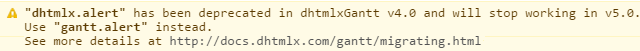

The newest update v7.0 introduces two major changes in the structure of the Gantt package:
1) All files of extensions are now bundled with the dhtmlxgantt.js file. Therefore, in order to activate any of extra extensions provided by dhtmlxGantt you need to use the API call.
<script src="../codebase/dhtmlxgantt.js"></script>
<script src="../codebase/ext/dhtmlxgantt_auto_scheduling.js"></script>
or
import "dhtmlx-gantt";
import "dhtmlx-gantt/ext/dhtmlxgantt_auto_scheduling";
Then you need to remove the extension file and enable the extension using the gantt.plugins method:
gantt.plugins({
auto_scheduling: true
});
See the full list of extensions here.
If you use a modified version of extension files or have developed custom extensions, include them as files on a page and they will work.
Note, that the dhtmlxgantt_smart_rendering.js and dhtmlxgantt_csp.js extensions are completely removed and do not need to be enabled manually.
2) All locales are now embedded into the dhtmlxgantt.js file. To activate them, use the API call.
gantt.i18n.setLocale("de");
In all versions before 7.0, the default working hours were from 8:00 till 17:00 that is 9 hours per day.
Starting from v7.0, the working hours are 8:00-12:00, 13:00-17:00 that is 8 hours per day.
If you want to revert to the previous settings, you'll need to set it manually:
gantt.setWorkTime({hours: [8, 17]});
The ext/dhtmlxgantt_csp.js extension is no longer needed as it is removed and replaced with the csp config which is enabled by default; the extension should be removed from the gantt.
Since the csp property is added to the dhtmlxGantt library, valid HTML 5 attributes, that can be used in any browser that supports HTML5 doctypes, will be assigned to all elements of Gantt.
Therefore, we recommend that you update already existing attributes with new ones:
However, the old attributes are included in the markup, so if you don't change the attributes' names, your code will continue working.
Earlier, alignment of grid cells was accomplished via display:inline-block. Starting from v7.0, display:flex is used instead and cells are positioned inside a flex container.
This change doesn't affect the UI visible to the user (it remains 100% identical) and shouldn't cause any migration issues. However, some regressions with styling of the grid cells may be related to this update.
Deprecated in v6.2 config and templates are removed in v7.0 and replaced with new ones:
If you have already defined the old names in your code, they will continue work. In other case, use a newer version of the API.
Since v6.3 the ext/dhtmlxgantt_multiselect.js extension automatically allows to drag horizontally several tasks that are selected at once. If you want to disable this functionality make use of the drag_multiple property and set it to false (by default it is enabled).
gantt.config.drag_multiple = false;
Until v6.3, Google Roboto font was included into the 'Material' skin of dhtmlxGantt via the import statement.
Starting from v6.3, the import was removed, therefore you need to add Roboto font manually:
<link rel="stylesheet" href="https://fonts.googleapis.com/css?family=Open+Sans|Roboto:regular,medium,thin,bold">Earlier you could use any arbitrary names for different files of dhtmlxGantt library included into a RequireJS-based app:
requirejs.config({
paths: {
"gantt": "../../codebase/dhtmlxgantt",
"tooltip": "../../codebase/ext/dhtmlxgantt_tooltip",
"marker": "../../codebase/ext/dhtmlxgantt_marker",
"locale_de": "../../codebase/locale/locale_de",
},
shim: {
"tooltip": ["gantt"],
"marker": ["gantt"],
"locale_de": ["gantt"],
}
});
requirejs(["gantt", "tooltip", "marker", "locale_de"],
function (dhx) {
var gantt = dhx.gantt;
...
});
Starting from version 6.3 names of modules must be fixed according to the folder structure of dhtmlxGantt library:
requirejs.config({
paths: {
"dhtmlxgantt": "../../codebase/dhtmlxgantt",
"ext/dhtmlxgantt_tooltip": "../../codebase/ext/dhtmlxgantt_tooltip",
"ext/dhtmlxgantt_critical_path": "../../codebase/ext/dhtmlxgantt_critical_path",
"locale/locale_de": "../../codebase/locale/locale_de",
},
shim: {
"ext/dhtmlxgantt_tooltip": ["dhtmlxgantt"],
"ext/dhtmlxgantt_critical_path": ["dhtmlxgantt"],
"locale/locale_de": ["dhtmlxgantt"],
}
});
requirejs(["dhtmlxgantt", "ext/dhtmlxgantt_tooltip", "ext/dhtmlxgantt_critical_path",
"locale/locale_de"],
function (dhx) {
var gantt = dhx.gantt;
...
});
Check that the module name for any file inside the package is specified as a relative path inside the 'codebase' folder of the package plus the filename, for instance:
core library:
extensions:
locales:
Before version 6.3, minimal and maximal values of the date inline editor were limited by the dates visible on the time scale, unless custom min/max values were provided.
Starting from v6.3 there are no default limits for minimal and maximal values of date editors.
In order to restore the previous behavior you can specify dynamic min/max values:
const dateEditor = {type: "date", map_to: "start_date",
min: function(taskId){
return gantt.getState().min_date
},
max: function( taskId ){
return gantt.getState().max_date
}
};
The update to v6.2 is generally compatible with v6.1 and should not require any changes in code. However, some behavior of the component has been changed (old behavior can be restored via config), and some APIs has been deprecated.
Smart rendering functionality has been updated and is now embedded into the component. It should now work both in the main timeline area and in resource panels. From now on, all timelines should render only rows and cells that are currently visible.
Smart rendering can be disabled via the smart_rendering config, which will return gantt to the default behavior of v6.1:
gantt.config.smart_rendering = false;
The dhtmlxgantt_smart_rendering extension is no longer needed and should be removed from gantt. The extension itself is still available in the package in case of compatibility issues. If the extension is added to the page, gantt will revert to the v6.1 smart rendering mode.
The behavior of the static_background config has been updated as well. Starting from v6.2 it will render PNG background AND any cells that have CSS class attached to them via template function.
If you need to revert to v6.1 behavior, use the static_background_cells config:
gantt.config.static_background_cells = false;
Configuration of time scale has been simplified. Instead of specifying a bunch of scale settings for each scale separately, now you should use just one configuration option scales that will contain a number of scale objects with settings for them.
All in all, the following time scale APIs are deprecated:
For example, the code below:
gantt.config.scale_unit = "day";
gantt.config.step = 1;
gantt.config.date_scale = "%d %M";
gantt.templates.date_scale = null;
gantt.config.subscales = [];
Now looks like this:
gantt.config.scales = [ { unit:"day", step: 1, format: "%d %M"} ];
The template used to define the CSS class applied to the cells of the timeline area is renamed as follows:
An example of using the renamed template is:
<style>
.weekend{ background: #f4f7f4 !important;}
</style>
gantt.templates.timeline_cell_class = function(task,date){
if(date.getDay()==0||date.getDay()==6){
return "weekend";
}
};
Below there is the scheme of replacing previously used API:
Since v6.2 the default values of the xml_date config, and xml_date and xml_format templates are undefined. Thus if you haven't assigned any values to them, they won't work.
However, Gantt will continue to use the old names of the config and templates, so if you've redefined those APIs in your code, they will work as before. For example:
// will work correctly
gantt.templates.xml_date = function(datestring){
return new Date(datestring);
};
The gantt.config.api_date config and gantt.templates.api_date template are removed from API as they weren't used inside gantt code. If you've used them in your code, you need to declare them once again.
gantt.config.api_date = "%d-%m-%Y %H:%i";
gantt.templates.api_date = gantt.date.date_to_str(gantt.config.api_date);
The dhtmlxgantt_auto_scheduling.js extension is upgraded with the tasks constraints functionality. Since this feature modifies the default behavior of auto scheduling, Gantt supports the compatibility mode that allows you to restore the previous behavior and not to take into account tasks constraints during auto scheduling.
To enter the compatibility mode, make use of the following configuration option:
gantt.config.auto_scheduling_compatibility = true;
Before version 6.1 tooltips have been displayed only inside the timeline area. After v6.1 release tooltips displaying isn't limited, and a tooltip follows the movement of the mouse pointer.
If necessary, you can restore the previous behavior by using the code below before initialization of Gantt:
gantt.attachEvent("onGanttReady", function(){
var tooltips = gantt.ext.tooltips;
tooltips.tooltip.setViewport(gantt.$task_data);
});
gantt.init("gantt_here");
gantt.parse(demo_tasks);
In the version 6.0 the getSlack() method is deprecated. Two methods are added instead:
Methods marked as deprecated in v4.0 stopped working in v6.0. The dhtmlx object definition was removed from dhtmlxgantt.js.
If you use any of the obsolete methods, you'll need to replace them with supported implementations according to the table below. No changes in the arguments or behavior of the methods were made.
| Obsolete methods | Working methods |
| dhtmlx.alert | gantt.alert |
| dhtmlx.confirm | gantt.confirm |
| dhtmlx.modalbox | gantt.modalbox |
| dhtmlx.uid | gantt.uid |
| dhtmlx.copy | gantt.copy |
| dhtmlx.mixin | gantt.mixin |
| dhtmlx.defined | gantt.defined |
| dhtmlx.bind | gantt.bind |
| dhtmlx.assert | gantt.assert |
| window.dataProcessor | gantt.dataProcessor |
Version 4.0 introduces some changes in public API, namely:
A fallback to the old API is included in v4.x, so the code written for v3.3 and earlier will continue working. However in some cases changes are required. Generally, all global declarations, except for window.gantt and window.Gantt (enterprise version only) are deprecated and will be removed in version 5.0.
There are methods that have been deprecated. They will continue working in v4.x, but will trigger a console warning (not visible to the end users) each time they are called.

Overview:
If you use these methods, your application will continue working after updating to v4.0 without requiring any immediate changes. In future we recommend updating them to a newer version of the API.
The complete list of deprecated methods includes:
| Up to version 3.3 | From version 4.0 |
| dhtmlx.alert | gantt.alert |
| dhtmlx.confirm | gantt.confirm |
| dhtmlx.modalbox | gantt.modalbox |
| dhtmlx.uid | gantt.uid |
| dhtmlx.copy | gantt.copy |
| dhtmlx.mixin | gantt.mixin |
| dhtmlx.defined | gantt.defined |
| dhtmlx.bind | gantt.bind |
| dhtmlx.assert | gantt.assert |
| window.dataProcessor | gantt.dataProcessor |
Some methods have become obsolete and will no longer be used in v4.x. If you still use these methods or objects, you'll need either to modify the code of an application or to include the dhtmlxgantt_deprecated.js file to the page.
Overview:
The whole list of the obsolete API is given below:
| Up to version 3.3 | From version 4.0 |
| window.dhtmlxEvent | gantt.event |
| window.dhtmlxDetachEvent | gantt.eventRemove |
| window.dhx4.isIE | gantt.env.isIE |
| window.dhx4.isIE6 | gantt.env.isIE6 |
| window.dhx4.isIE7 | gantt.env.isIE7 |
| window.dhx4.isIE8 | gantt.env.isIE8 |
| window.dhx4.isOpera | gantt.env.isOpera |
| window.dhx4.isChrome | gantt.env.isChrome |
| window.dhx4.isKHTML | gantt.env.isKHTML |
| window.dhx4.isFF | gantt.env.isFF |
| window.dhx4.isIPad | gantt.env.isIPad |
1) In order to prevent CSS conflicts with dhtmlxScheduler, the class names that have been used by both components were renamed in dhtmlxGantt (all classes were related to the lightbox). If you have customized styling for the lightbox, the migration will consist in renaming to appropriate CSS classes.
There is 2 renamed patterns:
If you encounter difficulties with migrating CSS classes,please, see the full list of renamed classes here.
2) The default values of the buttons_right and buttons_left configs were changed in the following way:
gantt.config.buttons_left = [
"dhx_save_btn",
"dhx_cancel_btn"
];
gantt.config.buttons_right = [
"dhx_delete_btn"
],
-->
gantt.config.buttons_left = [
"gantt_save_btn",
"gantt_cancel_btn"
];
gantt.config.buttons_right = [
"gantt_delete_btn"
];
Old configurations ( "dhx_save_btn", "dhx_cancel_btn", "gantt_delete_btn") will still work. Changes does not break any existing behavior.
3) The following features are now available only in the Commercial or Enterprise version of the component (not available in the GPL version of dhtmlxGantt):
1) A variety of objects (GanttProjectInfo, GanttTaskInfo, GanttChart, GanttProject, GanttTask) are replaced with 1 static object - gantt.
The gantt object contains a set of methods and 2 main properties: config and templates.
2) dhtmlxGantt is initialized through the init method
var gantt = new GanttChart() -> gantt.init("gantt_div").
3) Instead of GanttProject and GanttTask, data is stored as an array of plain objects with a number of mandatory properties and any custom properties:
{
data:[
{id:1, text:"Project #2", start_date:"01-04-2013", duration:18,
progress:0.4, open: true},
{id:2, text:"Task #1", start_date:"02-04-2013", duration:8,
progress:0.6, parent:1},
{id:3, text:"Task #2", start_date:"11-04-2013", duration:8,
progress:0.6, parent:1}
],
links:[
{ id:1, source:1, target:2, type:"1"},
{ id:2, source:2, target:3, type:"0"},
{ id:3, source:3, target:4, type:"0"},
{ id:4, source:2, target:5, type:"2"},
]
}
4) The XML format was changed but the old XML format is still can be loaded.
gantt.load("tasks.xml","oldxml");
Related sample: Loading data in Gantt 1.6 format
5) Design-time Objects:
6) Run-time Objects:
dhtmlxGantt 2.0 doesn't use different types for project and task objects. Instead of this, any task object can have 1 parent object and any number of child tasks.
A list of methods to get parent/child objects:
The id of the parent task can be accessed as gantt.getTask(task_id).parent. The root element doesn't have the 'parent' property.